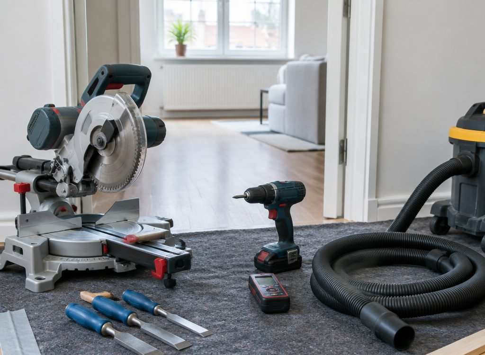
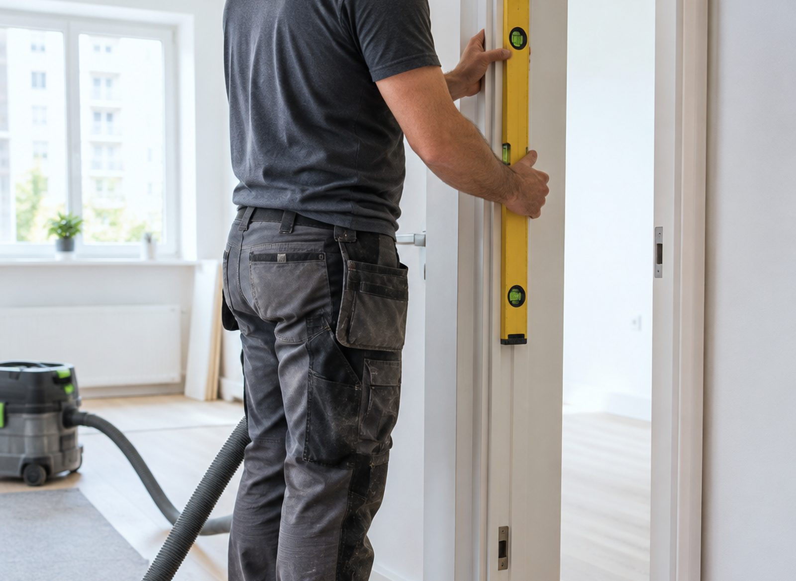

Этапы · интерактив
Семь шагов
Нажмите на этап: расскажу, что происходит и на что смотреть. Так вы точно знаете, за что платите.

Инструмент
Почему не
«на глазок»
Пазы под петли выбираются фрезером по шаблону: стамеской «на глаз» получается люфт, и дверь начинает цеплять через пару месяцев.
Торцовка с прижимом даёт ровные 45° на наличнике. Лазерный уровень показывает, куда уходит стена. Это не роскошь, а способ не переделывать.
Чистота
Как не остаться
с пылью
Пыль — главная претензия к монтажу дверей. Её можно почти не получить, если собирать её в момент образования.
Защита помещения
Плёнка на пол, укрытие мебели, дверные проёмы соседних комнат закрываем. Ничего не летит в шкафы.
Пылесос на инструменте
Отсос подключён к торцовке и фрезеру. Основная пыль уходит в мешок, а не оседает на стенах.
Уборка и проверка
Проходим пылесосом, протираем наличники, проверяем зазоры и закрывание. Показываю работу до того, как уйду.
Приёмка
На что смотреть
при сдаче
Зазоры
Ровные по всей высоте, 2–3 мм. Через щель не должно быть видно света из соседней комнаты.
Ход полотна
Дверь открывается и закрывается без усилия, не задевает коробку и пол.
Петли и замок
Петли без люфта, ответная планка замка совпадает, язычок входит без нажима.
Наличники
Углы без тёмной щели, планки симметричны, ничего не отходит от стены.
Чистота
Нет пыли на полках и подоконниках рядом с проёмом. Если что-то осталось, покажу и уберу.
Вопросы
Про монтаж
Можно ли ставить двери, если проём кривой
Можно, но сначала его надо привести в порядок: подштукатурить или закрыть откосом. Если перекос большой, честно скажу об этом на замере, а не после монтажа.
Сколько времени занимает установка одной двери
Обычно один проём — это несколько часов вместе с наличниками. Точнее скажу после замера: зависит от стены и от того, меняется ли полотно или ставится на старое место.
Правда ли, что после монтажа много пыли
Пыль появляется, когда штробят и пилят без отсоса. Мы подключаем пылесос к инструменту и накрываем пол: после работы остаётся протереть подоконник, а не мыть всю квартиру.
Что такое добор и нужен ли он мне
Добор — планка, которая добирает коробку до толщины стены. В панельном доме со стеной 120 мм он почти всегда нужен: без него наличник не достанет до стены.
Вы только ставите двери или продаёте их
Мы устанавливаем: двери, откосы, порталы и наличники. Помогаем с размерами и подсказываем, чего не хватает в комплекте до монтажа.
Есть ли гарантия
На монтаж даём гарантию, срок и условия фиксируем при сдаче работы. Если дверь перестала закрываться по нашей вине — приедем и поправим.
Работаете ли за городом
Гродно и район. Дальние адреса обсуждаем отдельно: зависит от расстояния и загрузки.
Можно ли установить портал вместо двери
Да, это отдельное направление. Портал — это проём без полотна с оформленными откосами и наличниками, его делают, когда хотят открытое пространство.
Заявка
Записаться
на монтаж
Скажите адрес и когда удобно — подберу день.
